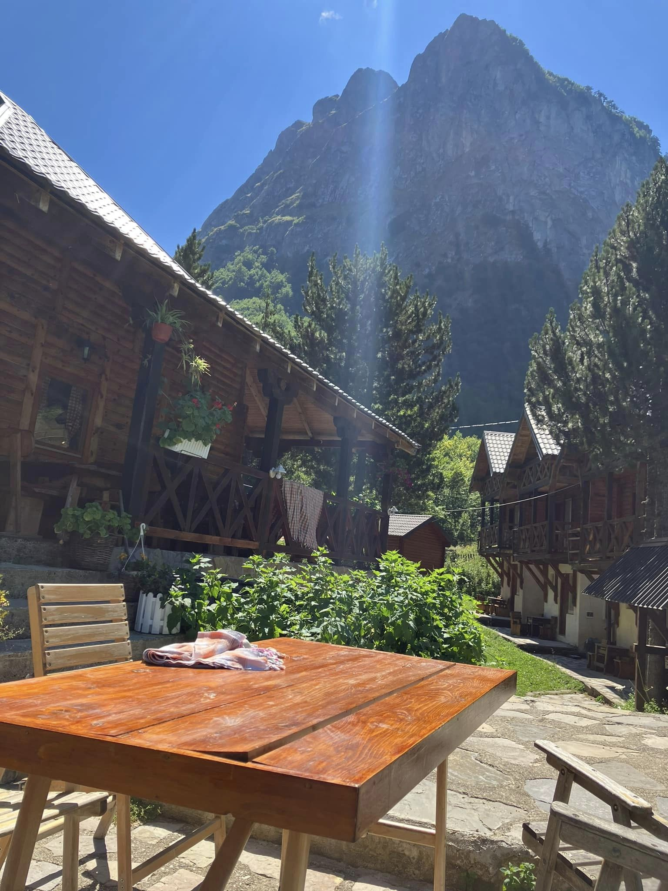

<!DOCTYPE html>
<html>
<head>
	
	<title>Peak of The Balkans Trail</title>

	<meta charset="utf-8" />
	<meta name="viewport" content="width=device-width, initial-scale=1.0">
	
  <link rel="stylesheet" href="https://unpkg.com/leaflet@1.7.1/dist/leaflet.css"/>
  
  <script src="https://unpkg.com/leaflet@1.7.1/dist/leaflet.js"></script>
  <script type="text/javascript" src="POTB.js"></script>

  <style>
		html, body {
			height: 100%;
			margin: 0;
		}
		#map {
			width: 100%;
			height: 100%;
            }

	.info { padding: 6px 8px; font: 14px/16px Dubai Black; background: rgba(255,255,255,0.8); box-shadow: 0 0 15px rgba(0,0,0,0.2); border-radius: 5px;} 
	.info h4 { margin: 0 0 5px; color: #000; font-size: 18px}
	</style>
	
</head>

<body>
<div id="map"></div>

<script>

	var mymap = L.map('map').setView([42.44204429992292, 19.8124729514594], 11.6);
	
	var Stadia_StamenTerrain = L.tileLayer('https://tiles.stadiamaps.com/tiles/stamen_terrain/{z}/{x}/{y}{r}.{ext}', {
	minZoom: 0,
	maxZoom: 18,
	attribution: '&copy; <a href="https://www.stadiamaps.com/" target="_blank">Stadia Maps</a> &copy; <a href="https://www.stamen.com/" target="_blank">Stamen Design</a> &copy; <a href="https://openmaptiles.org/" target="_blank">OpenMapTiles</a> &copy; <a href="https://www.openstreetmap.org/copyright">OpenStreetMap</a> contributors',
	ext: 'png'
	}).addTo(mymap);

	var hike = L.geoJson(routes, {
  style: function (feature) {
    return {
      color: feature.properties.color || 'orange',
      weight: 3,
    };
  }
}).addTo(mymap);

    L.marker([42.39679068534667, 19.77678489629855]).addTo(mymap)
		.bindPopup("<b>Thethi National Park</b><br/>");

	L.marker([42.44116269835566, 19.88045274975607]).addTo(mymap)
		.bindPopup("<b>Valbona National Park</b><br/>");

	L.marker([42.524826017699354, 19.843540112346453]).addTo(mymap)
	.bindPopup("<b>Vusanje</b><br/>");

	L.marker([42.521488,19.786356]).addTo(mymap)
		.bindPopup("<b>Prokletije National Park</b><br/>");


	L.circle([42.38859359263249, 19.781446130875242], 30, {
		color: 'black',
		fillColor: '#000000',
		fillOpacity: 0.5
	}).addTo(mymap).bindTooltip("Bujtina Polia ");

	L.circle([42.3897563767385, 19.78166577786001], 30, {
		color: 'black',
		fillColor: '#000000',
		fillOpacity: 0.5
	}).addTo(mymap).bindTooltip("Kisha e Thethit ");

		L.circle([42.38120018782695, 19.787909007179294], 30, {
		color: 'black',
		fillColor: '#000000',
		fillOpacity: 0.5
	}).addTo(mymap).bindTooltip("Kunora e Grunasit ");

	L.circle([42.377434, 19.794989], 30, {
		color: 'black',
		fillColor: '#000000',
		fillOpacity: 0.5
	}).addTo(mymap).bindTooltip("Waterfall Theth, Nderlysaj ");

	L.circle([42.364445, 19.746271], 30, {
		color: 'black',
		fillColor: '#000000',
		fillOpacity: 0.5
	}).addTo(mymap).bindTooltip("Syri Kalter ");

	L.circle([42.355259, 19.766539], 30, {
		color: 'black',
		fillColor: '#000000',
		fillOpacity: 0.5
	}).addTo(mymap).bindTooltip("Swimming hole, Nderlysaj ");

	L.circle([42.515953,19.760113], 30, {
		color: 'black',
		fillColor: '#000000',
		fillOpacity: 0.5
	}).addTo(mymap).bindTooltip("Maja e Vajushës ");

	L.circle([42.405758, 19.815191], 30, {
		color: 'black',
		fillColor: '#000000',
		fillOpacity: 0.5
	}).addTo(mymap).bindTooltip("Valbona Pass ");

	L.circle([42.439510, 19.877544], 30, {
		color: 'black',
		fillColor: '#000000',
		fillOpacity: 0.5
	}).addTo(mymap).bindTooltip("Guesthouse Kol Gjoni");

	L.circle([42.501373, 19.904188], 30, {
		color: 'black',
		fillColor: '#000000',
		fillOpacity: 0.5
	}).addTo(mymap).bindTooltip("Border Crossing");

	L.circle([42.513096, 19.886480], 30, {
		color: 'black',
		fillColor: '#000000',
		fillOpacity: 0.5
	}).addTo(mymap).bindTooltip("Shepherd's Rest Mountain Coffee and Tea House");

	L.circle([42.522849670488654, 19.841388720347812], 30, {
		color: 'black',
		fillColor: '#000000',
		fillOpacity: 0.5
	}).addTo(mymap).bindTooltip("Canyon Grlja");

	L.circle([42.522415, 19.845543], 30, {
		color: 'black',
		fillColor: '#000000',
		fillOpacity: 0.5
	}).addTo(mymap).bindTooltip("Guest House Vucetaj");

	L.circle([42.511806, 19.834934], 30, {
		color: 'black',
		fillColor: '#000000',
		fillOpacity: 0.5
	}).addTo(mymap).bindTooltip("Oko Skakavice The Eye");

	L.circle([42.478737, 19.787823], 30, {
		color: 'black',
		fillColor: '#000000',
		fillOpacity: 0.5
	}).addTo(mymap).bindTooltip("Mountain");

	L.circle([42.459347, 19.773619], 30, {
		color: 'black',
		fillColor: '#000000',
		fillOpacity: 0.5
	}).addTo(mymap).bindTooltip("A Bunker");

	L.circle([42.470703, 19.780886], 30, {
		color: 'black',
		fillColor: '#000000',
		fillOpacity: 0.5
	}).addTo(mymap).bindTooltip("Posta Verore e Kufirit");

L.control.scale().addTo(mymap);

var info = L.control();

	info.onAdd = function (map) {
		this._div = L.DomUtil.create('div', 'info');
		this.update();
		return this._div;
	};

	info.update = function (props) {
		this._div.innerHTML = '<center><h4>Peak of the Balkans Trail</h4>';
	};

	info.addTo(mymap);


var legend = L.control({position: 'bottomright'});

legend.onAdd = function (map) {

    var div = L.DomUtil.create('div', 'info legend'),
    grades = [],
    labels = [];

    // loop through our density intervals and generate a label with a colored square for each interval
    for (var i = 0; i < grades.length; i++) {
        div.innerHTML +=
            '<i style="background:' + getColor(grades[i] + 1) + '"></i> ' +
            grades[i] + (grades[i + 1] ? '&ndash;' + grades[i + 1] + '<br>' : '+');
}

return div;
};

legend.addTo(map);

</script>

</body>
</html>